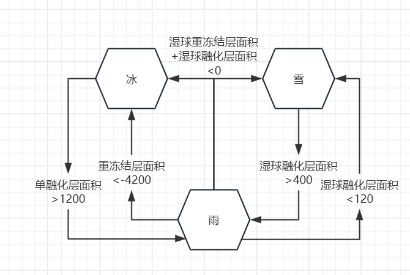

一种通过湿球融化层面积判断降水相态的研究
第一章 引言
1.1 研究背景及意义
降水相态的预测是气象预报与生产生活间密切联系的体现。精确、及时的降水相态预测是冬季气象预报业务的重点，也一直都是难点。目前对于各种降水相态成因的理解已经有一套相对成熟的体系，但是对于实际的降水相态预测，还存在着数值预报偏差、对逆温过程预报准确度差、实况数据订正的结果偏差等问题。对冬季降水相态的预测不够精确，将会造成对降水影响的错误估计。例如北京知名的 12.7 过程，24h 降雪量为 1.8mm，量虽然不算大，但引起了城市交通大堵塞，影响十分严重；尤其是冬季冻雨等逆温性过程，其造成的危害隐蔽性强，常常能在不知觉中产生积冰，进而严重影响交通、科研与生活：上述诸多问题可能对人民生活和经济发展带来不利影响，是如今气象预报业务下亟待解决的难题。因此，对降水相态预测的研究是非常值得深入研究的课题，无论是对学术界还是对我们的生产生活均有着较强的现实意义。
1.2 国内外研究进展
在降水相态预测方面，国内外已经从以下几个方面开展了相关研究。
（1）基于云和微物理的方案
该方案根据云内水凝物垂直分布与垂直温度层相结合的预测方法（Hersbach et al，2016）[1]对降水相态进行一定的预测。
《2011 年初湖南暴雪过程的成因和数值模拟分析》[2]（姚蓉等，2012）根据湖南省一次强降雪的气象数据，使用 WRF 模式对云微物理特征及降水相态转换机制进行了数值模拟，发现雪粒子的生成和发展不仅与液水比含量有关，还与其上空冰晶的含量及分布紧密相关。
《冬季降水相态的理论模型构建及地形的影响研究》[3]（陆正奇，2022）通过对中国 2000 年至 2019 年期间地面和探空观测数据的统计分析，揭示了雨雪过渡区内冻雨、冰粒和雨夹雪等降水相态的形成机制及气象条件；接着构建了一种新的理论模型（TPP 模型），该模型能够考虑降水相态形成的详细热力学过程，包括雨滴温度的变化、降水粒子的融化和再冻结过程，为进一步精确预报山地降水相态提供了理论基础和方法支持。
Pruppacher 等（1997）对前人的观测资料做了整理后指出，在不同的温度下，云中所含的冰相粒子数满足一个特定的规律，文章阐述了该大致规律并描述了其基本特征。
（2）基于温度廓线数据的主观判断法
根据温度廓线的结构与不同高度下温度阈值，多位学者结合地区实际情况提出了多种相态预报方法。该方法主要基于对关键层次的温度阈值进行判断。
《北京地区冬季降水相态的识别判据研究》[4]（张琳娜等，2013）通过分析 1980 年 7 月至 2010 年 6 月北京地区 31 年的降水数据，并进一步利用 2000 年至 2009 年冬季的日降水量资料，研究了雨雪转换过渡季节的降水过程和临界值降水过程，确定了与雨雪转换密切相关的六种物理量。该文献提出了三种相态分析方法，结合六种物理量，可以将预报准确度提高至 77% 左右。
《伴随对流层中低层气温持续下降的雪转雨过程分析》[5]（李海军等，2015）利用欧洲中期天气预报中心（ECMWF）0.25°×0.25° 分辨率的细网格模式产品、探空观测资料和风廓线雷达等数据，详细研究了对流层中低层气温持续下降背景下降水相态转变的具体原因。文中着重分析了温度条件、垂直运动和水汽变化等因素在降水相态转换中的关键作用。
《我国中东部平原地区临界气温条件下降水相态判别分析》[6]（陈双等，2019）中介绍了临界气温对降雪和降雨的影响，并通过分析温度和湿度的垂直分布特征，揭示了雨、雪天气中层温度差异的主要原因以及低层湿度对降水相态的影响。
国外的 Heppne 和 Czys 等分别对北美的降水相态判断进行了研究和总结，提出了重点关注 850–1000 hPa 之间的气层位势厚度与 700–850 hPa 之间的气层位势厚度。
（3）构建其他的预测模型
《降水相态分离单临界气温模型建立和检验》[7]中，作者使用雪日直接界定法，建立了东部季风区、西北干燥区和青藏高原区三个不同气候区的降水相态分离单临界气温统计模型，并对其外推能力和雨夹雪的偏差进行了分析。文中提供了长江以北地区降水相态预测的三个较为精确的模型，为进一步改进降水相态分离方法提供了基础数据支持和技术路线，并且有助于提升降水相态分类的准确性。
总体来说，国内外对该领域的研究已经相当广泛，但其大多都是通过特定高度的温度来确定降水相态，鲜有通过温度廓线与微物理过程总结的经验性分析方法与湿球融化层温度相关的研究，其对降水相态的判定也较难达到较高的精准度。
第二章 研究方法
2.1 研究目的
由于目前国内外还尚未有相关研究，我们意图从实用性的角度出发，通过将温度廓线与微物理过程相结合，以湿球融化层面积的相关数据判定降水相态，总结出一套易于使用、门槛较低、便于理解的降水相态经验性分析方法。并为其他研究者提供一个较为便捷，功能强大的湿球计算工具。
2.2 研究内容
北京地区最近几次冬季降水过程以及武汉等南方地区冻雨等过程，分析其相态成因和湿球数据与实际结果的相关性。
2.3 研究方法
为了更好的对气象数据进行统计、计算和分析，组员朱嘉赫自学 Python 编程，在两个月内解决了课题中的一大难点——湿球温度计算。通过查找有关的文献和对计算机的熟练运用，“湿球计算器”搭载了十余种不同的模型，集强大的功能、便捷的操作、美观的界面于一体，不仅为后续的研究铺平道路，其本身的高质量也成为我组研究内容的核心优势。
我们通过自己编写的强大工具“湿球计算器”对几次降水数据进行处理与分析，巩固了“湿球计算器”的核心优势地位，同时在降水相态的分析方面作出了一些进展。通过批量分析气象站数据，我们以湿球计算结果为基石，最终总结出一套简单易行的经验性规律。
第三章 研究结果
3.1 实验过程
我们通过实地记录和在网络上获取各大气象站数据，首先取得了最近几次涉及降水相态转化的典型降水过程，并使用“湿球计算器”计算出缺失的湿球数据，并总结在表格中，通过对这些数据进行手动归纳和分析，最终得到一定的实验结果与结论。
3.2 结果统计与分析
经过对多组数据的统计与分析，我们选出了几组最具有代表性、最适合总结统计规律的降水数据，整理得到表 1 与表 2。结果表明：直接湿球融化层面积 120 以下降水相态为雪，400 以上为雨，中间区域存在过渡性，与降水强度、地面温度露点关系不甚明确。任何一层湿球融化层面积大于 300 时无雪相态，小于 30 时可忽略。湿球重冻结层面积与湿球融化层面积之和小于 0 时，可能出现固态降水。
| 探空 站点 | 探空 日期 | 实测降水 相态 | 是否有 逆温层 | 地面温度 °C | 地面露点 °C | 当时次降水 强度 mm/h | 直接干球融化层 面积 °C·m | 直接湿球融化层 面积 °C·m |
|---|---|---|---|---|---|---|---|---|
| 57131 | 250124 12z | 雪 | 否 | 0.2 | $-0.5$ | 0.8 | 6.8 | 0 |
| 54511 | 151121 12z | 雨 | 否 | 0.1 | $-0.4$ | 0 | 2.2 | 1.8 |
| 54511 | 211106 12z | 雪 | 是 | 0.6 | $-1.0$ | 2.6 | 58.3 | 1.8 |
| 54511 | 250315 12z | 雪 | 否 | 1.9 | $-4.2$ | 0 | 386.5 | 19.8 |
| 54511 | 201121 00z | 雪 | 否 | 1.1 | $-0.1$ | 0.6 | 169.2 | 42.9 |
| 54511 | 240305 00z | 雪 | 否 | 1.6 | 0.3 | 0.2 | 213.0 | 54.5 |
| 57131 | 250125 00z | 雨 | 否 | 1.8 | 0 | 0.1 | 285.8 | 118.3 |
| 57131 | 250124 00z | 雨夹雪 | 是 | 1.9 | 0.4 | 0.3 | 215.5 | 138.5 |
| 57083 | 250125 12z | 雨 | 否 | 2.1 | 0.9 | 0.8 | 243.9 | 207.1 |
| 57083 | 250125 00z | 雨夹雪 | 是 | 3.7 | $-1.6$ | 0.2 | 871.0 | 215.3 |
| 54511 | 230212 00z | 雨夹雪 | 是 | 2.0 | $-0.7$ | 0.4 | 770.9 | 215.7 |
| 54511 | 250315 0824z | 雨夹雪 | 否 | 3.6 | $-1.0$ | 0.6 | 979.6 | 269.4 |
| 54511 | 200214 00z | 雨 | 是 | 0.4 | $-0.5$ | 3.5 | 417.2 | 400.2 |
| 54511 | 210228 12z | 雨 | 否 | 4.4 | 3.2 | 1.6 | 1143.2 | 418.3 |
| 54511 | 211209 00z | 雨 | 否 | 3.4 | 2.4 | 0 | 810.6 | 636.6 |
注：54511 站 151121 12z 个例实测相态为雨，因凝结核问题未形成降雪粒子。
第四章 结论与讨论
4.1 全文结论
依据处理后的数据进行总结概括，我们得到了如下经验性的判定方法，能够在一定程度上较为准确地判定降水相态间的转化。
雨雪相态判定参数：直接湿球融化层面积 120 以下降水相态为雪，400 以上为雨，中间区域存在过渡性，与降水强度、地面温度露点关系不甚明确。特殊过程与凝结核有一定关系。
冰粒冻雨相态判定参数：任何一层湿球融化层面积大于 300 时无雪相态，小于 30 时可忽略。湿球重冻结层面积与湿球融化层面积之和小于 0 时，可能出现固态降水。
雨完全转冰：重冻结层面积小于 $-4200$；冰完全转雨：单融化层面积大于 1200；中间为过渡地带，与降水强度、地面温度露点关系不甚明确。
总体的研究结论可以概括为图 1，它展示了雨、雪、冰三种降水相态的转化过程以及其与湿球融化层、重冻结层之间的联系。

4.2 创新点及研究价值
在本次研究中，创新性地采用了目前学界较少使用的湿球融化层面积等数据，结合云与微物理特征判定降水相态。采用湿球数据能够更全面、更直观地反映降水相态的形成与转化过程，形成了一个经验性的模型，能够为降水相态分析提供参考与支持。
同时，“湿球计算器”作为我组的核心优势所在，具有完全原创、功能强大、精确度高等特点，还在不断更新迭代中，也是其作者创造力的最佳体现。湿球计算器现已在网络上发布（https://github.com/x1shang/Wetbulb-Calculator），以为全世界的气象工作者和气象爱好者提供一个完全免费、轻量级、科研级的湿球计算软件，为气象学研究注入活力。
4.3 不足与展望
本次研究历时较短，也有许多不足之处。由于没有充足的时间和理论、技术支撑，我们尚未完成基于湿球融化层面积预测降水相态的数学模型，仅仅停留在经验性阶段。同时，由于近几年北京周边等地雨雪转换、冰粒等天气较少，数据量较小，导致最终实现的效果不达预期，也没能做到极高的精准度。湿球融化层面积法在未来可能具有多种应用前景，也有更多的内容值得继续探索，未来将会在定量地构建数学模型等方面展开研究，并制作相关的计算程序以完成一个完整的程序作品，作为研究内容的体现。
参考文献
- H H, B B, P B, et al. ERA5 全球再分析产品[J]. 气象科技进展, 2020, 10(04): 160.
- 姚蓉, 叶成志, 田莹, 等. 2011 年初湖南暴雪过程的成因和数值模拟分析[J]. 气象, 2012, 38(07): 848–857.
- 陆正奇. 冬季降水相态的理论模型构建及地形的影响研究[D]. 南京信息工程大学, 2022. DOI: 10.27248/d.cnki.gnjqc.2022.000036.
- 张琳娜, 郭锐, 曾剑, 等. 北京地区冬季降水相态的识别判据研究[J]. 高原气象, 2013, 32(06): 1780–1786.
- 李海军, 张雪慧, 潘士雄. 伴随对流层中低层气温持续下降的雪转雨过程分析[J]. 气象科技, 2015, 43(06): 1164–1169. DOI: 10.19517/j.1671-6345.2015.06.024.
- 陈双, 谌芸, 何立富, 等. 我国中东部平原地区临界气温条件下降水相态判别分析[J]. 气象, 2019, 45(08): 1037–1051.
- 刘玉莲, 任国玉, 孙秀宝. 降水相态分离单临界气温模型建立和检验[J]. 应用气象学报, 2018, 29(04): 449–459.